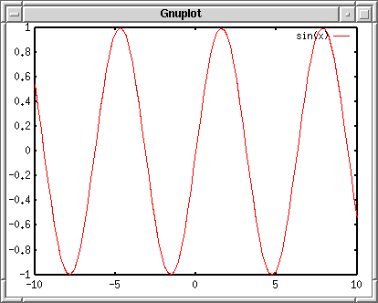
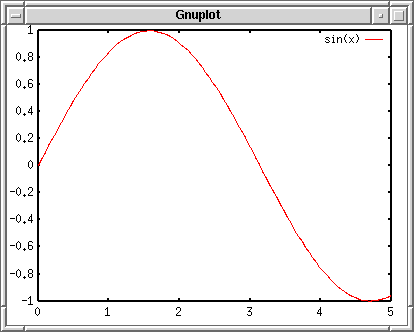
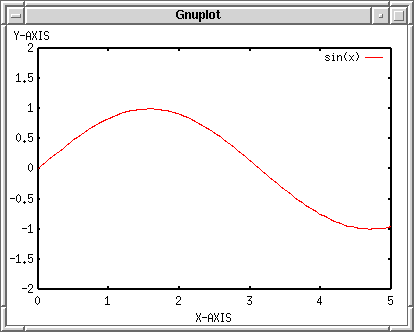
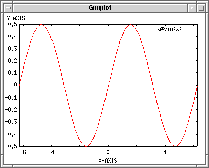

- not so Frequently Asked Questions -
update 2004/8/31
|
|
- not so Frequently Asked Questions - update 2004/8/31
|
Introduction to gnuplot --- Basic UseSince gnuplot has been ported to various operating systems, its usage slightly depends on the platform. Here we describe an introduction to gnuplot for the case of UNIX, X11. Basically its usage is common to those systems, so that this tutorial may be helpful for the other operating systems. First of all, exec gnuplot. Gnuplot displays a banner and credit, then shows a gnuplot command line prompt "gnuplot> ". Gnuplot is a command line driven plotting tool. You give commands here to make your figure.
% gnuplot
G N U P L O T
Version 4.0 patchlevel 0
last modified Thu Apr 15 14:44:22 CEST 2004
System: Linux 2.4.23
Copyright (C) 1986 - 1993, 1998, 2004
Thomas Williams, Colin Kelley and many others
This is gnuplot version 4.0. Please refer to the documentation
for command syntax changes. The old syntax will be accepted
throughout the 4.0 series, but all save files use the new syntax.
Type `help` to access the on-line reference manual.
The gnuplot FAQ is available from
http://www.gnuplot.info/faq/
Send comments and requests for help to
<gnuplot-info@lists.sourceforge.net>
Send bugs, suggestions and mods to
<gnuplot-bugs@lists.sourceforge.net>
Terminal type set to 'x11'
gnuplot>
At the "gnuplot> " prompt you can use the following commands:
Actually there are more commands which cannot be categorized into the items above, so that it is hard to explain everything here. See gnuplot online help by help command. Here we explain the simplest way to draw a graph with gnuplot.  Commands to Quit, Read a Command File, and Save Parametersexit or quit command terminates gnuplot. Once you quit gnuplot, all of setting you made will be lost. To save the current setting, use save command followed by a file name in which parameters and functions you defined are stored. The file name is quoted by a single or double quotation. The file name is arbitrary, but if the same name exists in the current directory, gnuplot overwrites internal parameters in that file without any warnings. gnuplot> save "savefile.plt" The saved file is a usual text file. You can edit the contents with a text editor. To draw a graph again with this file, use the load "savefile.plt" command at the gnuplot command-line, or execute gnuplot and give the data-file name as a command line option. Inside gnuplot gnuplot> load "savefile.plt" Outside gnuplot (shell command line) % gnuplot savefile.plt The difference of those two methods is: with the load command you go back to the gnuplot> command prompt after gnuplot read the file, then you enter the usual interactive mode. If you give the data-file name as a command line option (the second case), gnuplot ends after it reads the file, and you come back to shell. This is a batch mode. Commands to plotThere are two basic commands to plot a graph, plot and splot . The former is used for a 2-dimensional graph, and the latter is for a 3-dim. Gnuplot makes a graph of any kinds of functions or numerical data stored in a file. To plot a function, use the plot/splot command with a range of X-axis (or X and Y ranges for 3-dim. plot) and the function. You can omit the range parameters. Here is an example of plotting y=sin(x), which you may often see at many gnuplot tutorials. gnuplot> plot sin(x) 
This is the 2-dimensional graph gnuplot generates. The frame is drawn by a thick line, which is called "border". The X and Y axes have graduation called "major tics", and numeric labels are written at the tics location. The intervals between each major tic can be divided by minor tics. You can draw names of X and Y axes. The X-axis name -- "xlabel" -- is shown below the x-axis border, while the position of "ylabel" depends on your terminal. If your terminal can rotate letters, the 90-degree rotated ylabel should go to the left of y-axis, otherwise it is shown at the top of y-axis. If ranges of X and Y axes are not specified, gnuplot determines appropriate values for those automatically. The example above you can see the default X range which is -10 to +10, and the Y range was automatically determined. To set the X range 0 to 5, [0:5] . gnuplot> plot [0:5] sin(x) 
Commands to change variables and parametersThere are a number of parameters which change your plot appearance. You can change them by the set command. See online help.
gnuplot> help set
The `set` command can be used to sets _lots_ of options. No screen is
drawn, however, until a `plot`, `splot`, or `replot` command is given.
The `show` command shows their settings; `show all` shows all the
settings.
If a variable contains time/date data, `show` will display it according to
the format currently defined by `set timefmt`, even if that was not in effect
when the variable was initially defined.
Subtopics available for set:
angles arrow autoscale bar
bmargin border boxwidth clabel
clip cntrparam contour data
dgrid3d dummy encoding format
.....
zero zeroaxis zlabel zmtics
zrange ztics
Here are several examples to change the parameters. Firstly insert some text into the xlabel and ylabel. The text should be quoted by a single or double quotation. Next, specify the range of X and Y axes. As explained above the X range can be changed if you specify that at plotting. Alternatively you can change them by the "xrange" and "yrange" parameters. gnuplot> set xlabel "X-AXIS" gnuplot> set ylabel "Y-AXIS" gnuplot> set xrange [0:5] gnuplot> set yrange [-2:2] gnuplot> plot sin(x) 
If a terminal is not specified, gnuplot makes a graph on your screen. The set terminal command changes the destination of your plot into a postscript file or printer, etc. Gnuplot produces a variety of graph by means of various drivers, so that it is independent of the platforms (but quality of the drawing still depends of the terminal). The terminals which your gnuplot can handle can be displayed by the set terminal command.
gnuplot> set terminal
Available terminal types:
unknown Unknown terminal type - not a plotting device
table Dump ASCII table of X Y [Z] values to output
linux Linux PC with (s)vgalib
....
tpic TPIC -- LaTeX picture environment with tpic \specials
pstricks LaTeX picture environment with PSTricks macros
texdraw LaTeX texdraw environment
mf Metafont plotting standard
gnuplot> set terminal postscript
Terminal type set to 'postscript'
Options are 'landscape noenhanced monochrome dashed defaultplex "Helvetica" 14'
Gnuplot produces a graph in a Postscript format when set terminal postscript command is given. If an output direction is not specified, the produced Postscript data flow on your screen. The set output command changes the destination of output. gnuplot> set output "plot.ps" gnuplot> plot sin(x) Commands about ShellYou can escape to an interactive shell temporary in which any shell commands can be used. To spawn a shell, use shell command. To return to gnuplot, use exit . A single shell command can be executed with the ! character at the beginning of the command, like ! ls -a . Gnuplot supports 'pwd' and 'cd' commands with which you can display your working directory, or change the directory. The working directory is your current directory when gnuplot is invoked. To change the current directory, cd "../other/dir" . You need a quotation mark. Commands for Substitution, Function Definition, Calculations, etc.You can use gnuplot as a simple calculator. To substitute a value into a variable, just type "variable = value" at the gnuplot command line. To see the value of variable, use print command. gnuplot> a=10 gnuplot> print a 10 "Variable = expression" substitutes a calculated value into the variable. Double precision is used for the calculation except for integer. gnuplot> a=1+2*sqrt(3) gnuplot> print log(a) 1.49606798806764 The defined variable can be used for the plot command. Gnuplot holds the circular constant in "pi". To draw a graph of a*sin(x) from -2pi to +2pi, where a=0.5: gnuplot> set xrange [-2*pi:2*pi] gnuplot> a=0.5 gnuplot> plot a*sin(x) 
You can define your own function. For example, to make a function of f(x)=sin(x)*cos(x), it is defined as: gnuplot> f(x)=sin(x)*cos(x) The function defined above can be referred to as "f(x)". You can also include a user-defined variable in your function. gnuplot> f(x)=a*sin(x)*cos(x) This function contains a variable "a" which is defined by user, and the function varies with this parameter. |